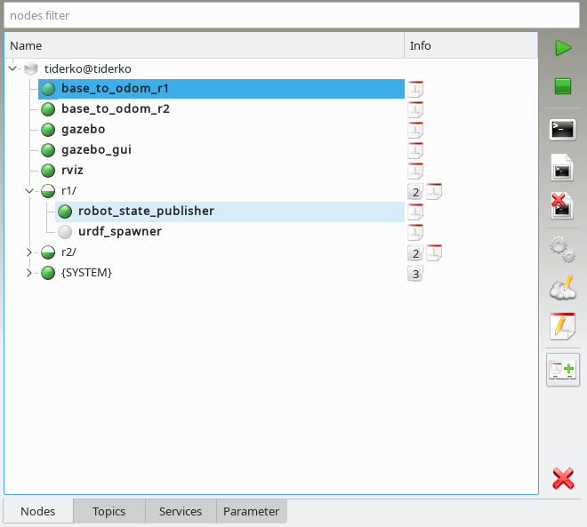
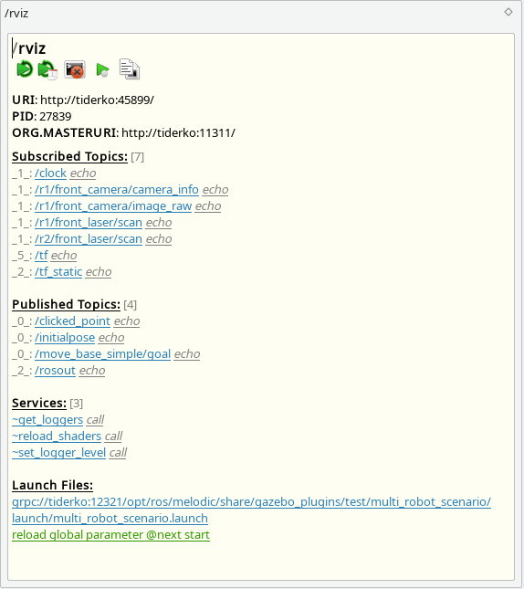
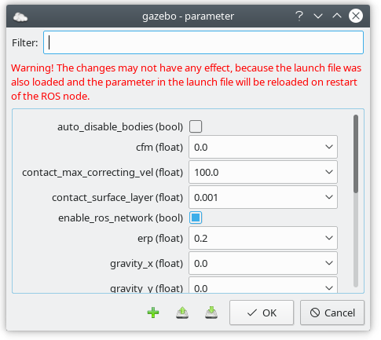

The Nodes tab lists all nodes which are either running or available for launch in the current configuration. Running nodes have a green icon  .
They are monitored using their process ID, which is updated by the local master_discovery node. You have to run a master_discovery node on each host to ensure that information about all nodes is available in the network. If a node is registered with the master but has no associated process ID, the node is considered crashed and marked with
.
They are monitored using their process ID, which is updated by the local master_discovery node. You have to run a master_discovery node on each host to ensure that information about all nodes is available in the network. If a node is registered with the master but has no associated process ID, the node is considered crashed and marked with  . Note that only local nodes are pinged. Nodes which are running not at the same host with ROS Master are marked by
. Note that only local nodes are pinged. Nodes which are running not at the same host with ROS Master are marked by  . Crashes of these nodes cannot be detected.
. Crashes of these nodes cannot be detected.

As of now, the only reliable way to detect running nodes is by their registered topics and services. Thus, if a node has neither, it will never be shown as running.
In order to launch nodes, a configuration must be loaded. You can open roslaunch files. Nodes which are backed by a local configuration in
this manner are marked with  . If a node with
the same name is listed in multiple launch files, you have choose one configuration when
you launch the node.
. If a node with
the same name is listed in multiple launch files, you have choose one configuration when
you launch the node.
If you select a node additional information to this node are shown in description dock. The description dock offers some special control actions and direct access to topics and services of the node.

Nodes control buttons:
Launches the selected nodes unless they are already running. Crashed |
|
|
Terminates the selected nodes using the shutdown method of the Slave API. Use |
|
Shows a console with terminal session of the selected node. In description dock you can kill the screen program that provides the terminal session, most likely killing the node in the process. Select a host in Nodes View to get access to all screens on the host. |
|
Shows the log files of the selected nodes. Usually there are two files for each node. One is the ROS log file and the other one contains the output of the terminal session. The log files are not overwritten if the node is stopped and restarted. In description dock you can copy the file path to clipboard. |
|
Deletes the log files. |
|
Runs the dynamic reconfigure GUI for selected node. |
| Edit values on the ROS Parameter Server of selected node. The dialog fields store a history of the entered data. To delete a stored entry, setect this entry and then press Shift+Delete. Additional, values of the parameter dialog can be stored or loaded from a file in YAML format.  |
|
|
Opens the Launch File Editor |
| Save current state (loaded launch files and running nodes) to a profile. You can load this profile through launch dock. | |
|
Unloads the configuration file(s). |

 in description dock to send a SIGKILL signal to the SCREEN of the node process or force the master to unregister the services and topics. The latter is useful if the node died without a proper shutdown.
in description dock to send a SIGKILL signal to the SCREEN of the node process or force the master to unregister the services and topics. The latter is useful if the node died without a proper shutdown.